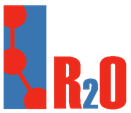
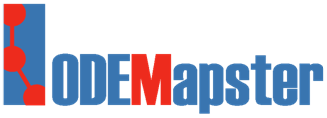
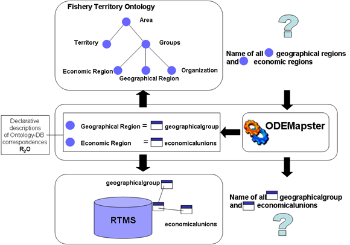
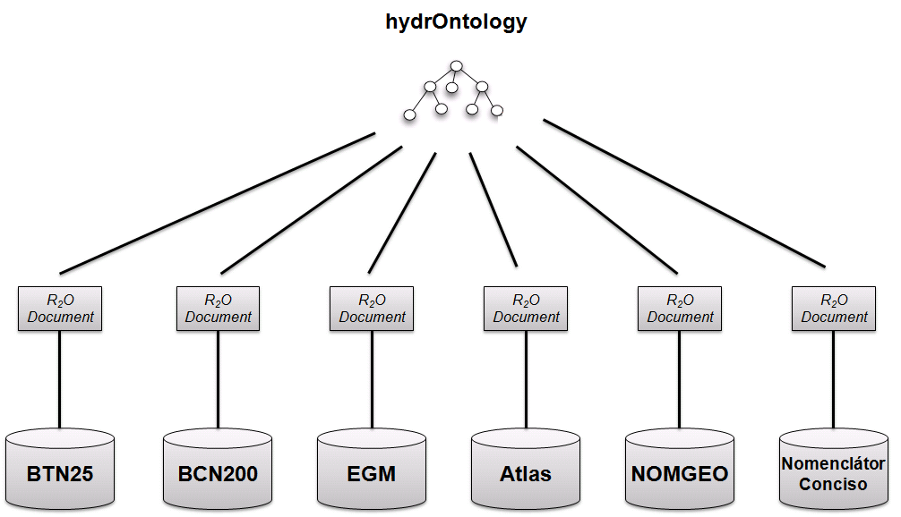

")
")
R2O y ODEMapster
R2O & ODEMapster ya no está siendo utilizado, ni realizamos mantenimiento alguno en el grupo, puesto que ha sido reemplazado por el paquete de herramientas morph, que incluye morph-RDB, morph-GFT y morph-streams.
R2O & ODEMapster es un marco integrado para la expresión formal, la evaluación, verificación y explotación de correspondencias semánticas entre ontologías y bases de datos relacionales. El marco integrado está compuesto por:
R2O, un lenguaje formal declarativo con expresividad suficiente como para representar situaciones de correspondencia complejas debidas al hecho de que se alinean dos modelos desarrollados y mantenidos de forma independiente y entre los que pueden darse disparidades de todo tipo.
ODEMapster, procesador que se encarga del proceso de upgrade o enriquecimiento semántico del contenido de la base de datos o mediante la extracción bajo demanda del contenido de la base de datos en respuesta a preguntas planteadas en términos de la ontología mediante un proceso de re-escritura de consultas.

Por otro lado, ODEMapster plugin, desarrollado dentro el contexto del proyecto NeOn, proporciona una interfaz gráfica que permite crear, ejecutar o realizar consultas de "mappings" R2O. Este plugin está incuido en el NeOn Toolkit.
Para utilizar ODEMpaster plugin, primero hay que instalar NeOn Toolkit. NeOn Toolkit puede descargarse desde www.neon-toolkit.org. Una vez descargado, ejecute el fichero y siga las instrucciones.
Después de instalar NeOn Toolkit, el siguiente paso es instalar ODEMapster plugin. Este paso se puede realizar mediante las siguientes acciones:
- Abrir Neon Toolkit.
- Desde el menú Help de Neon Toolkit, elegir “Software Updates” --> “Find and Install”.
- Una ventana Install/Update aparecerá en Neon Toolkit.
- Si ha instalado este plugin anteriormente, selecciones: “Search for update”
- Si no ha instalado este plugin anteriormente, seleccione: “Search for new features”
- Seleccione “Neon Toolkit Update Site” entre los posibles sitios de actualización y pulse finish
- Seleccione “ODEMapster” dentro de “Ontology Population” y presione next
- Seleccione “Agree” en el acuerdo de licencia.
- Pulse “Finish” en la ventana de instalación..
Para una información más completa, consulte el manual de ODEMapster.
¿Cómo funciona?
Para la ontología hydrOntology y cada una de las bases de datos del IGN se creó un documento R2O que describe los mappings entre cada base de datos y la ontología. A continuación, se ejecutó el procesador ODEMapster para generar las instancias RDF. Las bases de datos del IGN están almacenadas en MySQL y ORACLE e hydrOntology está en OWL.

Lista de usuarios de ODEMapster
- FAO - http://fao.org
- Guntars Bumars - University of Latvia - Institute of Mathematics and Computer Science - http://www.lumii.lv/Pages/computer.htm
- Christian M. Fletcher - Department of Computer Science - Durham University - http://www.dur.ac.uk/ecs/computing.science/undergraduate09/whatis/
- iSOCO - www.isoco.com
- GIS4GOV project
- SemSorGrid4Env - http://www.semsorgrid4env.eu/
- GeoLinkedData - http://geo.linkeddata.es/
- WEB n+1 - http://www.webenemasuno.es

Created under Creative Commons License - 2015 OEG.